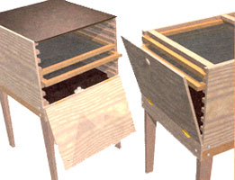
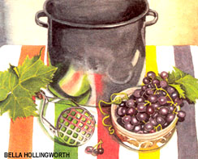

Classic food
preservation method reborn.
Dear MOTHER
Do you or any of your readers have plans for a dehydrator? I live in very windy Wellington, so dehydrating out of doors can sometimes be hazardous.
Cheers,
Katherine
Wellington, New Zealand
I am trying to build my own, food dehydrator Can you give me a few pointers? I'm looking for something that is inexpensive to run and build. We have a lot of moisture here on the Oregon coast.
Thank you,
Barry
Newport, OR
We prefer outdoor sun-drying, but that just isn't practical in Oregon for much of the year or in New Zealand when the wind blows. You can dry foods in the oven, and self-sufficiency catalogs sell a plastic-mesh, multiple-tray hanging hot air dryer (you supply the hot air from your wood-burning stove). Too hot for summer, though.
For an indoor, all-season, electric-resistance-powered unit, we can do no better than to send you to Gen MacManiman, who wrote the first reliable book on home food drying a generation ago. It is now out in a reprint edition and is as valuable as ever (at a fraction of the price of other books on the topic).
Dry it-You'll like It by Gen MacManiman, paperback reprint edition (June 1997), MacManiman, Inc.; ISBN: 0961199806. The cost is around $7.00 from Amazon.com , a bookstore or direct from Gen: Living Foods Dehydrators, 3023 362nd Ave. SE, Fall City, WA 98024. Or call (800) 544-8972, e-mail info@dryit.com or visit http://www.dryit.com .
The book contains full-scale plans for you to make a "Living Foods Dehydrator" from plywood and other common materials. You can buy the completed (waist-high, seven-shelf) unit, a kit, or just the hard-to-make parts: screen shelves and the low-amp electric heating unit. The Living Foods Dehydrator is a piece of furniture as nicely finished as you want to make it; by contrast, all the other dryers on the market are puny little countertop gadgets (plastic, over-promoted and overpriced). We have used a MacManiman dryer since the early `70s, and it still works good as new.
Dear MOTHER:
I am looking for a formula for fertilizer that consists of household products. 1 have seen articles in the past where you can make your own and it is very effective. These fertilizers have consisted of soda, soap, chewing tobacco and other items. I will be using this on my lawn to promote growth and kill weeds. Any help would be appreciated.
Thank you,
Jeffrey
Salisbury, MD
You are looking for Jerry Baker, self-proclaimed "America's Master Gardener." A decade or more ago, Baker included many concoctions such as you mention in a best selling book, Plants Are Like People (needing love and presumably thriving on stale beer, soda pop and condiments). He has parlayed the book's chummy style and quirky instructions for home gardening into a microempire in cluding a TV show, a Saturday morning radio/Web (at Broadcast.com) talk show called "On The Garden Line," more than three dozen repetitive books and videos, a newsletter, and a by-mail and online garden products catalog.
One observer we know calls Baker "the Richard Simmons of home gardening." Mother would not be so acerbic. If you can get past the schtick, Baker's directions are founded on sound gardening principles. In fact, many of his "secret tricks" are old-time wisdom straight out of early copies of MOTHER.
We put Baker's idea (dosing plants with tonics of expensive consumer-packaged products) into the category of gardening gimmickry/faddism - cute, fun to try, and harmless for the most part - but offering questionable benefits that can be achieved better at less cost using proven organic methods. For example, the plant nutrients left in wheat and barley mash after its been brewed to alcohol in beer are better (and much more cheaply) supplied by compost or cottonseed meal. The nicotine you can brew out of any kind of tobacco is a powerful, broad-spectrum insect poison. But tobacco is highly taxed and expensive (unless you have access to a supply of cigarette butts). You can find untaxed nicotine in commercial plant sprays... but nicotine kills beneficial insects as well as pests. Many organic pest controls are cheaper, more selectively effective and less dangerous: BT against caterpillars, soap suds and ladybugs against aphids and scale insects, and pyrethrum and rotenone against beetles, grubs and more.
Dear MOTHER,
Here I am with bags full of concord grapes, and I can't find my MOTHER EARTH NEWS recipe for making grape juice from over 20 years ago. You put the whole grapes in a Mason jar and cover with boiling water and sugar? Please help quick!
Joanie
Redding, CA
We've learned a lot about home canning since the old days - some of it the hard way, through episodes of food poisoning from improperly preserved homegrown produce. If just one yeast cell survived the hot water of the method you recall, and with that much sugar, you could get a rapid fermentation that would generate enough CO 2 gas to explode, sending glass fragments and sticky - sweet purple glop all over the place. Were you to use cool water, leave the lid ajar and put it in the sun for a week, with tuck, you could get a mildly alcoholic grape cordial; without the luck you'll get an evil-bubbling, vile-smelling mess that will boil over with a fetid scum.
We recommend relegating 20-year-old preserving tricks to the nostalgia shelf-even from MOTHER'S back issues as well as grandmother's old handwritten canning recipes you found stuffed into your mother's Betty Crocker Cookbook. Cook most everything to be preserved in a modern pressure canner so it heats for a scientifically determined time period at a temperature that is high enough to kill all bugs. But concord grapes are highly acidic, limiting the organisms that can survive in the juice and broadening preservation methods.
Wash and pick over fully-ripe grapes, removing bug-bitten and diseased grapes, floater or sinker greenies and mummies, twigs, leaves, webs and insects. Crush gently without breaking seeds. (Crushing with your well-washed, bare feet in a big wooden tub is traditional, and so long as you like purple, you won't have to wear socks for a week. A potato masher and a kettle will do as well; get purple mittens if the kettle is deep enough and you don't wear rubber gloves.) To extract all the juice from a big kettle of concord or southern fox grapes, add just enough pure, soft water to cover. Simmer slowly till good and soft - 10 or 15 minutes. Strain through a jelly bag (don't squeeze for clearest juice) and chill overnight.
Pour off clear juice only; the harmless but bothersome tartaric acid that can crystallize in the juice is mostly in the sediment settled to the bottom. (Bonus: To keep the acid and make your own baking powder, cook up the pulp and bottom residue again. Strain hot liquid through cheesecloth and let evaporate in a shallow pan covered with more cheesecloth to keep out fruit flies. You will precipitate out your own all-natural cream of tartar to pulverize with a mortar and pestle and use as is, or mix with equal parts of Arm & Hammer's best sodium bicarbonate (baking soda) to make old-fashioned homemade baking powder for biscuits and quick breads.)
Put grape residue deep in the compost to avoid attracting yellow jackets that are raising overwintering brood when concords ripen; they become aggressive when they smell souring fruit.
To retain as much of that foxy concord tang as possible, put hot juice in sterilized freezer containers, cover, let cool, freeze and keep at 0°F. For grapeade: thaw and add an equal volume of water and sugar to taste.
To can, add sugar to taste; equal parts juice and white sugar (by weight) will make it jelly - sweet. Heat to a simmer and put in sterilized canning jars. Cover loosely with sterilized lids and process in a boiling water bath (or a pressure canner at 10 pounds) for 15 minutes for both pints and quarts.
Dear MOTHER,
I saw an article about 15 plus years ago inMOTHER EARTH NEWS on Dexter cattle. 1 got, fairly serious about getting a few to raise. Now it's going to be possible and I don't know where to get any information on who raises them. Your help would be greatly appreciated.
Paul R.
Tucson, AZ
Congratulations! For information on this ancient (first bred in Ireland) breed, which thrives in both warm and very cold climates, contact the American Dexter Cattle Association, 26804 Ebenezer, Concordia, MO, 64020. For more information, call or fax (660) 4637704, email info@dextercattle.org or visit http://www.dextercattle.org .
Best of luck.
|
 |
 |
|